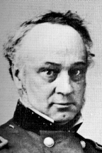

|

|

|
|
|
A renowned military theoretician, Henry Wager Halleck served
the Union as field general, general-in-chief, and army chief
of staff. While he failed to provide innovative and
decisive leadership in battlefield strategy, Halleck
excelled at organizing the army. Halleck was born on
January 16, 1815 in New York. Discontented with farm life,
he left home and attended West Point, where he graduated
third in the class of 1839.
After a six-month tour of European military
establishments, Halleck published Elements of Military
Art and Science in 1846, a text that incorporated Baron
de Jomini's approach to war. (Jomini was the foremost
strategist in nineteenth century military education.)
Halleck's work spread Jomini's theories beyond the
professional military when it was read by President Lincoln
and volunteer officers during the Civil War.
During the Mexican-American War (1846-48), Halleck was
assigned to California. He resigned from the army in 1854 to
focus on his law practice and land and mining interests. By
1861, Halleck had amassed a fortune of $500,000. But in
August 1861, Halleck left his successful private pursuits
and returned to the Army. He replaced General John Frémont
in the Department of the Missouri, where he quickly
instilled order to the disorganized and corrupt command. His
curt manner facilitated rapid reform but did not foster
positive personal relationships, traits that continued to
shape Halleck's reputation during the Civil War. Halleck
proved to be a tentative commander, reluctant to authorize
advances until all risks could be minimized. Yet when
General Ulysses S. Grant's forces captured Forts Henry and
Donelson in early 1862, Halleck eagerly claimed credit for
the victories of his subordinate, who had operated beyond
Halleck's orders.
Lincoln brought Halleck to Washington as General-in-Chief
of the Army in July 1862 in the hope that Halleck's
theoretical expertise would provide much-needed coordination
to the Union war effort. Halleck relayed Lincoln's desires
for more aggressive efforts against Confederate troops, but
his lack of innovative battlefield strategies and his
deference to the field generals disappointed Lincoln.
Halleck convinced Lincoln that Grant's forces in the Western
Theater should continue to follow Jomini's principle of
seizing strategic property, but by 1863 he was willing to
compromise Jomini's genteel method of war and concentrate on
destroying Lee's Army of Northern Virginia.
Lincoln utilized Halleck as an intermediary to avoid
conflicts with field generals, to deflect criticism when
popular officers were dismissed, and to avoid responsibility
when victory eluded Union troops. Much criticism was
directed at Halleck by the press, politicians, dissatisfied
officers, and the general public, even when disappointing
results were due to the failure to follow Halleck's orders.
Ultimately, Grant's successes led to his promotion to
General-in-Chief of the Army on March 9, 1864. Halleck
became chief of staff and continued his duties: forwarding
orders from Lincoln and Grant, overseeing the administrative
aspects of the army, and bearing the brunt of criticism from
soldiers, politicians, and the public.
Halleck's successes were less publicized. He instilled
order, efficiency, and discipline in a largely volunteer
army. Halleck organized the mobilization of troops, the
transportation of men and material, and the acquisition and
distribution of food, clothing, and ammunition. He
centralized the administration of an army that had been
formed largely through state-sponsored units. He
professionalized the army by working for the replacement of
political generals with West Point graduates.
After Lincoln's death, Halleck was stripped of his chief
of staff title and ordered out of Washington. Assigned
first to Richmond, then to San Francisco, and finally to
Louisville, Kentucky, Halleck remained with the army until
his death on January 9, 1872. He was vilified in the
memoirs of Union generals, with few people defending his
contributions. While Halleck was not a great military
strategist, his administrative efforts made many Union
victories possible and created the first national army in
the United States.
Source: Joan Waugh, ed., Facts on File Encyclopedia of American
History: Civil War and Reconstruction, 1856 to 1869 (New York: Facts on
File, 2003), 162-163.
|